This week
The week in four numbers
Warnings that ended in a stop, warnings ignored, safe-walking minutes, and the current streak — with the change since last week.
Walk with the phone put away to earn points and hatch buddies. Use it while walking, and it’s just one gentle buzz.
Scan the QR to get the app on your phone
What happens when they look down while walking?
JoanX never blocks the screen. Each step only happens if the one before didn’t work.
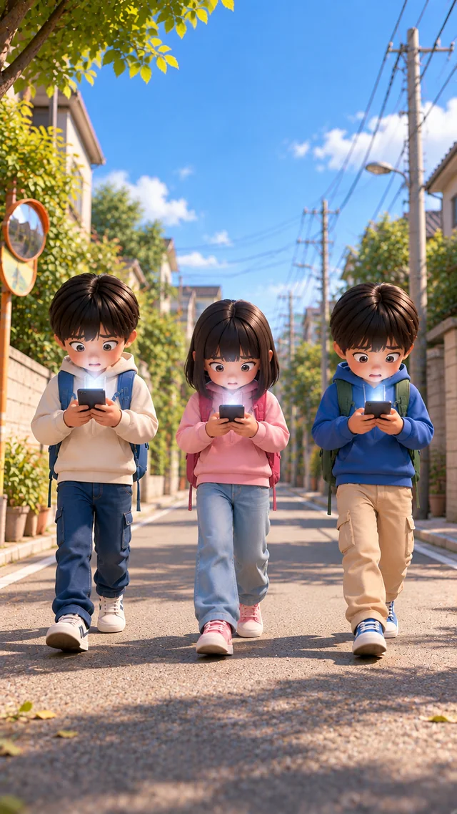
1 · A buzz
One vibration, no screen yet
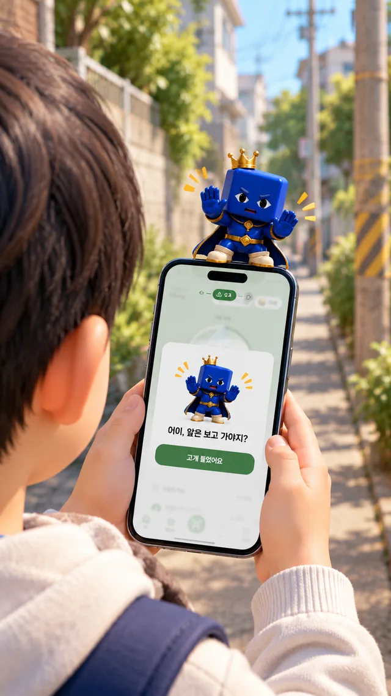
2 · A card
One line, one button
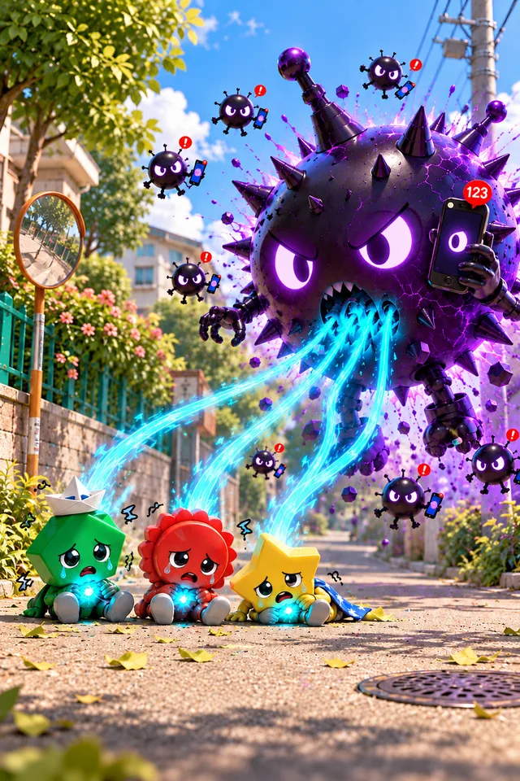
3 · A firmer message
If they keep walking head-down
First, just one buzz. Put the phone away or stop within two seconds and nothing else happens — and that earns the most points.
It never locks the phone. Calls and texts always work.
Why it works
No nagging.
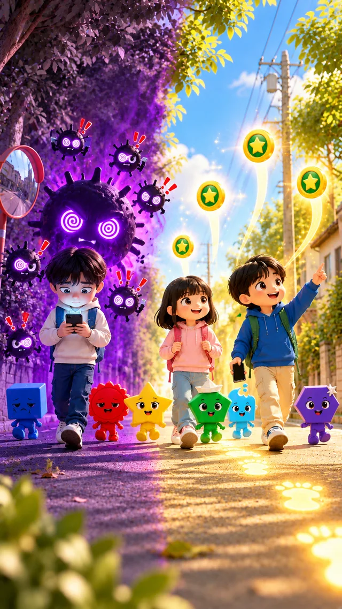
What does my child get out of it?
Safe walking earns points. Points grow their buddy, and a stronger buddy beats villains.


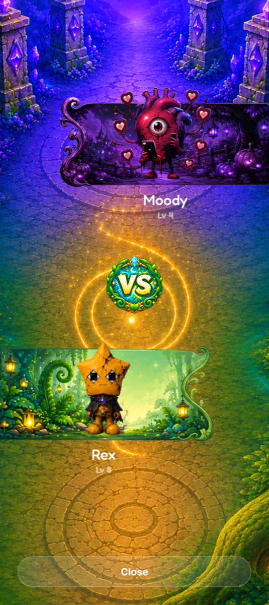


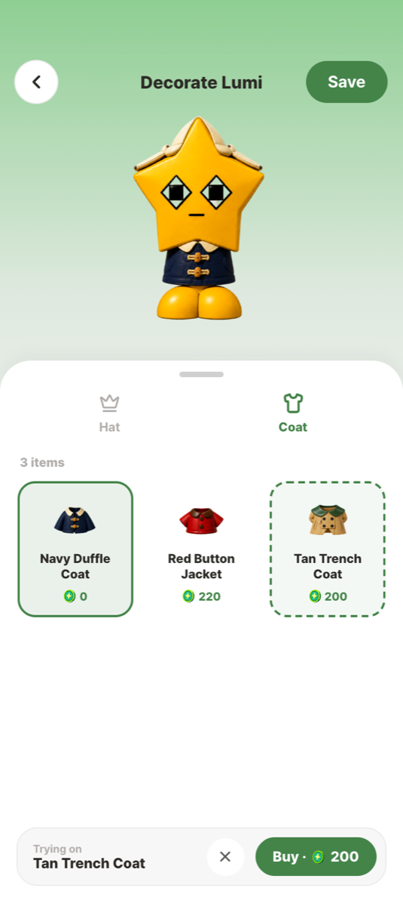
What can I see — and what can’t I?
Everything a guardian can see is on the screens here. Everything else stays with your child.
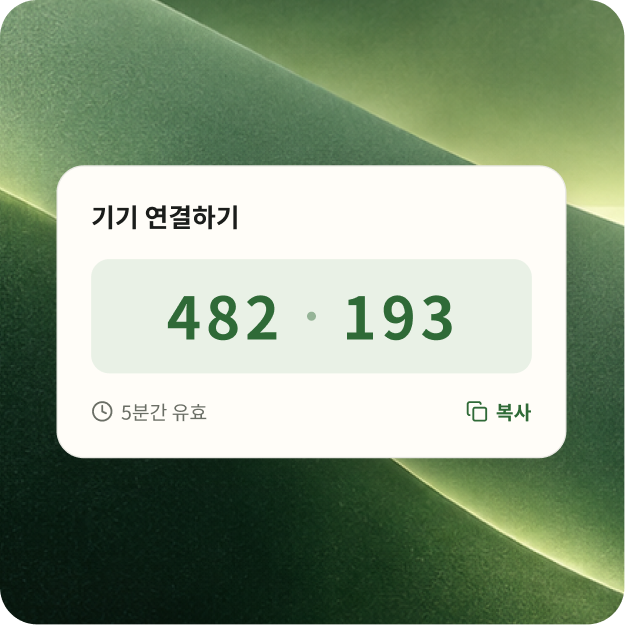
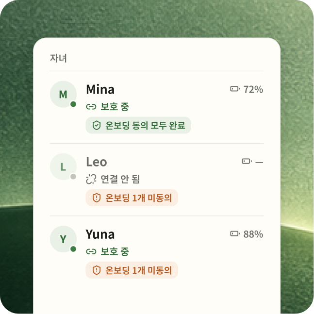
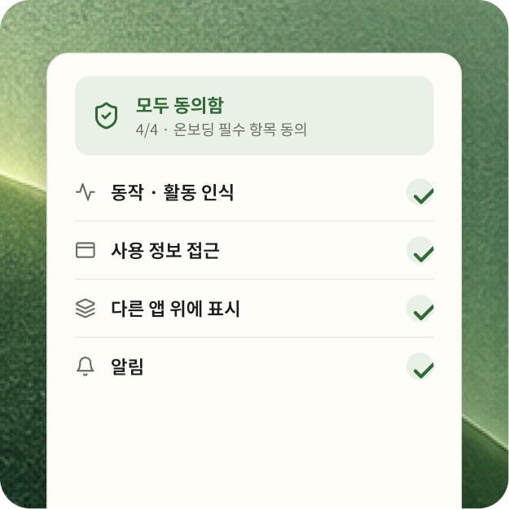
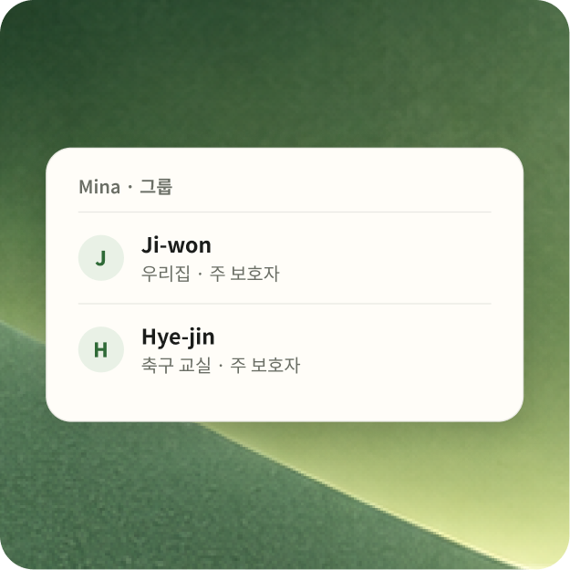
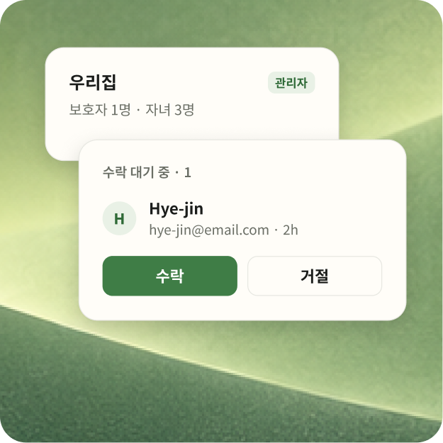
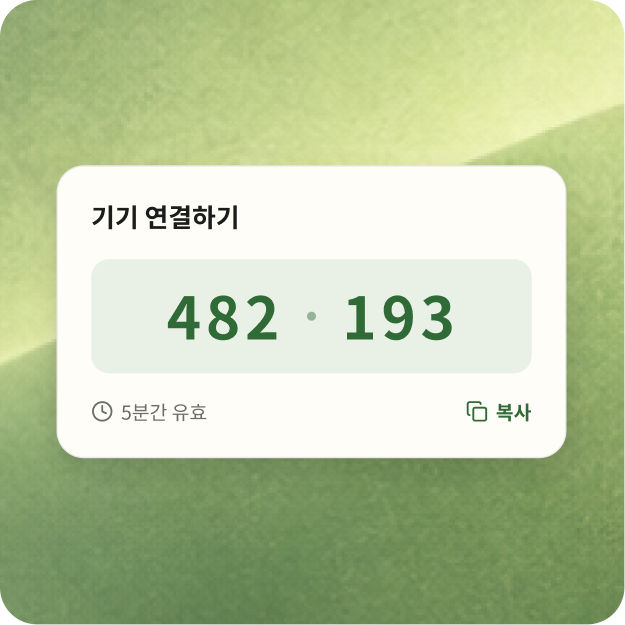
Not a lock on your child’s phone — a reason to put it away.
Every walk with the phone away, | their buddy grows a little.
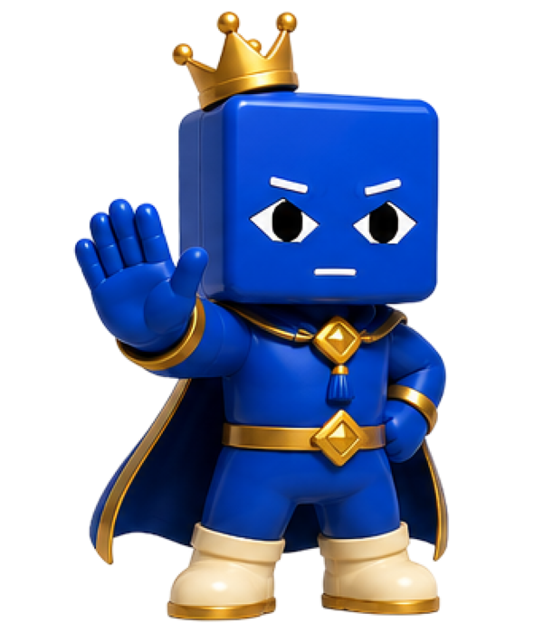
What do I get as a parent?
And an alert only when something needs you now.
This week
Warnings that ended in a stop, warnings ignored, safe-walking minutes, and the current streak — with the change since last week.
Alerts
If a fall is detected, the phone asks your child if they are okay for twenty seconds. No answer, and you are told right away.
Your groups
Invite a co-parent or grandparent into a group with a QR or a code. An admin approves every request.
Anything else?
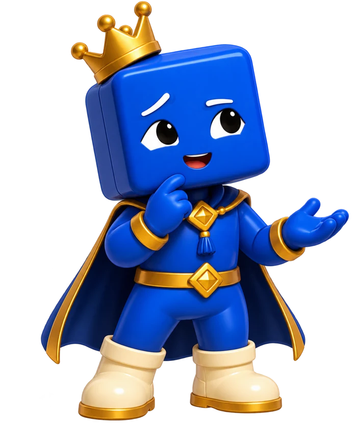
The phone's own accelerometer. Walking is confirmed from a steady step cadence held for about eight seconds; if the screen is in use at the same time for ten seconds or more, the safety moment begins. Detection runs on the phone itself; your report is built from the moments it records.
No, and that is deliberate. JoanX has no map and no location trail — walking is noticed from the phone's motion sensor. A child who feels tracked uninstalls the app, and then it protects nobody.
Their phone pairs to your account rather than to a person, so a child cannot quietly unlink themselves — only a guardian can. They can dismiss a warning, but if they keep using the phone while walking it comes back firmer, and an ignored warning shows in your report.
A seven-day free trial is planned. Pricing has not been announced yet — this page will be updated when it is.
Up to five, each with their own rules, their own buddy and their own weekly report. You switch between them at the top of the dashboard, and other adults who help — a co-parent, a grandparent, the school-run circle — can be added to a group for any of them.
How do I start?

Install JoanX on your child's phone and type in the code your app shows — or scan the QR on their screen. No wearable, no new hardware, nothing to buy.
Only while walking, and only for walking plus phone use at the same time. The rest of the day, JoanX does nothing at all.

How often they stopped when warned, how often they didn't, and whether it is happening less as the week goes on.
Get JoanX
Free to try for seven days when it lands. One install on your child's phone, one on yours, and about three minutes to pair them.
Scan the QR to get the app on your phone